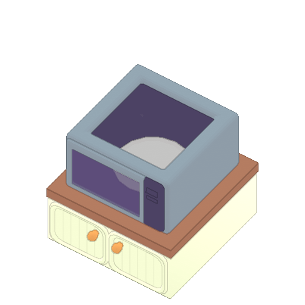

전자레인지

◾ 전자레인지의 문을 열어 음식을 넣고 닫아야 조리가 되며 조리가 끝나면 자동으로 문이 열린다.
◾ 전자레인지 안에 음식이 없는데 문이 닫혀있거나 계속 조리가 되는 경우 화재가 발생한다.
◾ 화재는 인접한 품목으로 퍼질 수 있으며 불이 붙은 기기는 화재가 진압될 때까지 사용할 수 없다.
◾ 가스 리미터와 가스 오버라이드의 영향을 받지 않는다.
◾ 플레이어는 이 기계에 휴대할 수 있는 모든 항목을 놓을 수 있다.